Facultad de Ingeniería de Sistemas Computacionales
Lic. en Desarrollo y Gestión de Software
Tópicos Especiales II
Laboratorio 13 — Spec-Driven Development (SDD)
Grupo 1GS241
Presentado por:
Ríos, Gerald (8-987-741)
Revisado por:
Profesor Regis Rivera
Fecha de entrega
29 / 10 / 2026
Índice
Introducción3
1. Preparación y forma de trabajo3
1.1 Entorno y estructura3
1.2 Cómo usamos la IA4
2. Fase A. Problema, reglas y especificación4
2.1 Constitución y aclaraciones (pasos 3 a 5)4
2.2 Especificación v1.0 y auditoría (pasos 6 a 8)5
3. Fase B. Aceptación, plan y tareas6
3.1 Criterios de aceptación y primer control (pasos 9 y 10)6
3.2 Plan técnico (pasos 11 y 12)6
3.3 Tareas, trazabilidad y segundo control (pasos 13 a 15)6
4. Fase C. Pruebas primero, implementación controlada7
4.1 Línea base roja (pasos 16 a 18)7
4.2 T01: registrar, validar y calcular fecha (pasos 19 y 20)8
4.3 T02 y T03, una iteración por tarea (pasos 21 y 22)9
4.4 Revisión manual y cotejo con la spec (pasos 23 y 24)12
5. Fase D. Cambio de requisitos y convergencia13
5.1 Spec v1.1 y prueba primero (pasos 25 a 27)13
5.2 Cambio limitado a R05 y verificación final (pasos 28 y 29)15
6. Diferencia con una práctica de vibe coding16
7. Entregables y demostración17
7.1 Matriz de trazabilidad17
7.2 Qué incluye la entrega17
7.3 Demostración breve18
7.4 Ruta opcional con Spec Kit18
8. Preguntas de reflexión18
Conclusiones20
Referencias Bibliográficas20
Introducción
Este laboratorio pide construir un gestor de préstamos de libros siguiendo Spec-Driven Development: primero se describe el problema, se resuelven las ambigüedades y se aprueba una especificación con criterios de aceptación; después vienen el plan, las tareas y las pruebas, y solo al final el código. La idea es que lo escrito en la especificación mande sobre lo que la IA tenga ganas de generar.
Trabajamos con la ruta principal (Python 3.13.5, unittest, sin paquetes externos) y con datos ficticios. Como asistente de IA usamos Claude Code en modo no interactivo (claude -p, modelo Sonnet), de modo que cada interacción dejó una transcripción real en la carpeta de prompts. Las pruebas las corrimos nosotros desde la terminal; la IA nunca ejecutó nada, aunque lo intentó. No hicimos commits ni usamos Git durante el laboratorio.
El informe sigue las cuatro fases del enunciado y reúne la evidencia de cada una: salidas literales de las pruebas, diffs de cada cambio que hizo la IA, la matriz de trazabilidad, el párrafo sobre vibe coding y las seis preguntas de reflexión. La carpeta laboratorio_sdd, los prompts, la evidencia y los diffs van en el ZIP de la entrega.
1. Preparación y forma de trabajo
1.1 Entorno y estructura
Comprobamos la versión de Python (3.13.5) y creamos laboratorio_sdd con la estructura exacta del paso 2: docs/ con los cinco archivos de documentación, tests/test_prestamos.py y prestamos.py, todos vacíos al inicio. La Figura 1 muestra la salida del entorno y la lista de archivos.
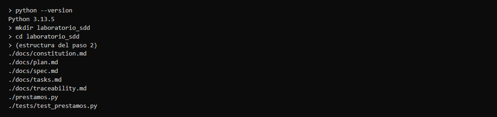
Figura 1. Versión de Python y estructura inicial del laboratorio.
1.2 Cómo usamos la IA
Cada paso con prompt se ejecutó con claude -p --model sonnet desde la carpeta laboratorio_sdd, con el texto literal del enunciado y, donde el enunciado dice «pega el contenido», con el contenido real del archivo. Para los pasos de implementación añadimos --allowedTools "Read,Edit" y --permission-mode acceptEdits, que limita a la IA a leer y editar y no le deja ejecutar comandos. Esto choca con la regla del profesor de no activar aceptación automática de cambios, así que la revisión la hicimos de otra forma: antes de cada paso de implementación guardamos una copia de prestamos.py, y después generamos el diff con git diff --no-index y lo leímos línea por línea antes de dar el cambio por bueno. La IA solo podía tocar ese archivo, y comprobamos con una comparación de bytes que tests/test_prestamos.py no cambió en T01, T02, T03 ni en el cambio de R05.
Una precaución más: desactivamos la carga de los archivos CLAUDE.md del equipo (variable CLAUDE_CODE_DISABLE_CLAUDE_MDS=1), porque en la primera prueba la IA ya conocía las reglas de otras materias y eso contaminaba la interacción. Cada transcripción completa está en entregables/prompts/, con fecha y hora, el prompt arriba y la respuesta abajo.
2. Fase A. Problema, reglas y especificación
2.1 Constitución y aclaraciones (pasos 3 a 5)
Copiamos la constitución tal como la da el enunciado: Python estándar, módulo sin interfaz, ValueError sin alterar la lista, fechas deterministas, nada sin criterio de aceptación y toda modificación actualiza spec y pruebas.
Para el paso 4 usamos el prompt del enunciado:
Actúa como analista de requisitos. Necesito un gestor de préstamos
de libros para un laboratorio. Haz preguntas sobre reglas ambiguas,
casos límite y datos de entrada. NO generes código ni arquitectura.
La IA devolvió 38 preguntas agrupadas en ocho temas, con ocho marcadas como prioritarias. Muchas no aplicaban a un módulo de laboratorio (escáner de código de barras, notificaciones por correo, reportes en PDF). Respondimos las prioritarias con las decisiones del paso 5: un ejemplar por título, sin tipos de usuario, máximo de 3 préstamos activos, 14 días calendario, sin multas ni renovaciones, y los cinco campos de la estructura como únicos datos del préstamo. El resto quedó fuera de alcance, y así lo dejamos escrito en la especificación.
2.2 Especificación v1.0 y auditoría (pasos 6 a 8)
Escribimos docs/spec.md con R01 a R08 literales y la pasamos por el prompt de auditoría del paso 7:
Revisa esta especificación como analista QA. Identifica
contradicciones, reglas no comprobables o decisiones implícitas.
Devuélveme preguntas y cambios propuestos, NO código.
[contenido de docs/spec.md]
La auditoría sirvió: señaló cinco contradicciones y varias reglas ambiguas. Dos hallazgos nos cambiaron el diseño. El primero, que «todo error produce ValueError» no se cumple solo, porque 9999-12-31 más 14 días desborda con OverflowError y un None como usuario daría TypeError. El segundo, que date.fromisoformat en Python 3.11 o superior acepta cosas como 20260901, que nuestra regla de formato debe rechazar. La Tabla 1 resume qué aceptamos y qué rechazamos.
Tabla 1. Decisiones sobre la auditoría QA de la IA
Propuesta de la IA
Decisión
Razón
El dict nace con devuelto=False; «activo» es devuelto == False
Aceptada (D1)
R05 y R06 dependen de eso.
Recortar usuario y libro antes de validar; la fecha no se recorta
Aceptada (D2)
Resuelve el orden de R01, R03 y R04.
Formato estricto con ceros y solo dígitos ASCII
Aceptada (D3)
Cierra «válida» en R03 y evita falsos válidos de fromisoformat.
Desborde y entradas que no son texto producen ValueError
Aceptada (D4)
Respeta la constitución (solo ValueError).
Devolver también recorta; comparación exacta; mismo dict; orden R04, R03, R06, R05; reuso de libros devueltos
Aceptadas (D5 a D11)
Quitan ambigüedad sin ampliar el alcance.
Año válido entre 1900 y 9998
Rechazada
Es un límite que el cliente no pidió.
Subir la spec a versión 1.1
Rechazada
La 1.1 queda reservada para el cambio del cliente en la Fase D.
Mensajes o códigos de error por regla
Rechazada
Los AC solo exigen ValueError; el texto no es contrato.
Validar que prestamos sea una lista bien formada; agregar una función de consulta
Rechazadas
La lista la entrega quien llama; la consulta está fuera de alcance.
Registramos todo en la propia spec, con las decisiones aceptadas y las rechazadas, y agregamos al final el control de aprobación: «Versión 1.0 revisada: fecha 29/10/2026; aprobador(es) Gerald Ríos». Antes de seguir revisamos que no quedara ninguna ambigüedad que cambiara la conducta del programa.
3. Fase B. Aceptación, plan y tareas
3.1 Criterios de aceptación y primer control (pasos 9 y 10)
Guardamos AC01 a AC08 en docs/spec.md y marcamos las cinco casillas del primer punto de control, cada una con su justificación dentro de la spec: alcance explícito, R01 a R08 sin contradicciones, AC verificables, fechas y límites definidos y comportamiento ante errores definido. Al releerlo vimos que una justificación decía que los ejemplos de AC03 y AC04 estaban en las pruebas, cuando las pruebas solo cubren dos fechas inválidas; lo corregimos en el segundo control.
3.2 Plan técnico (pasos 11 y 12)
Diseña un plan técnico para esta spec aprobada. Usa solo
Python estándar, funciones puras salvo modificación explícita
de la lista, datetime.date para fechas y unittest para pruebas.
Define interfaces, estructura y riesgos. NO escribas el código.
[contenido de docs/spec.md y docs/constitution.md]
La IA cumplió con no escribir código y entregó un plan largo. Aceptamos lo que cambia la conducta: no fiarse solo de fromisoformat, rechazar dígitos Unicode, convertir OverflowError en ValueError, comprobar isinstance(str) antes de strip() y hacer un único append al final. Rechazamos otras cosas: poner el archivo de pruebas en la raíz (el paso 2 lo fija en tests/), diez clases de prueba con decenas de casos (el enunciado trae ocho pruebas y la Fase D exige no alterar las demás), las constantes públicas y los seis ayudantes como estructura obligatoria, y reordenar el trabajo por bloques. docs/plan.md quedó con el texto del enunciado, el orden de implementación y una sección de evaluación crítica con cada aceptación y rechazo.
3.3 Tareas, trazabilidad y segundo control (pasos 13 a 15)
Creamos docs/tasks.md con T01 a T05 y docs/traceability.md con la tabla inicial. Para el segundo control le pedimos a la IA que señalara huecos, sin corregir nada:
Segundo punto de control. Revisa spec, plan, tareas y trazabilidad.
Señala huecos: tareas que introduzcan funciones fuera de alcance y requisitos
que no tengan al menos una tarea y una prueba. NO escribas código ni
corrijas los documentos; solo lista los huecos.
[contenido de spec.md, plan.md, tasks.md y traceability.md]
No encontró tareas fuera de alcance. Aceptamos cuatro cosas: la regla «error produce ValueError y la lista queda intacta» no tenía fila propia en la trazabilidad; T04 y T05 no tenían criterio de salida; no estaba dicho dónde van las comprobaciones de T02 dentro de la función de T01; y la casilla floja del primer control. Rechazamos dos hallazgos: que faltaba una prueba de borde en R05 (test_r05 ya acepta el tercer préstamo y comprueba que devolver libera cupo) y que había que separar test_r08 en dos (ya prueba «inexistente» y «ya devuelto»). Corregimos los documentos antes de tocar el código, como pide el enunciado.
4. Fase C. Pruebas primero, implementación controlada
4.1 Línea base roja (pasos 16 a 18)
Creamos prestamos.py con las dos firmas que lanzan NotImplementedError y copiamos las ocho pruebas del enunciado sin cambiarles nada. La primera corrida dio FAILED (errors=9): son ocho pruebas, pero test_r03 cuenta dos errores por sus dos subpruebas. Que fueran nueve y no ocho nos descuadró un momento, hasta que revisamos las subpruebas. La Figura 2 recorta los tracebacks; el archivo completo está en la carpeta de evidencia.
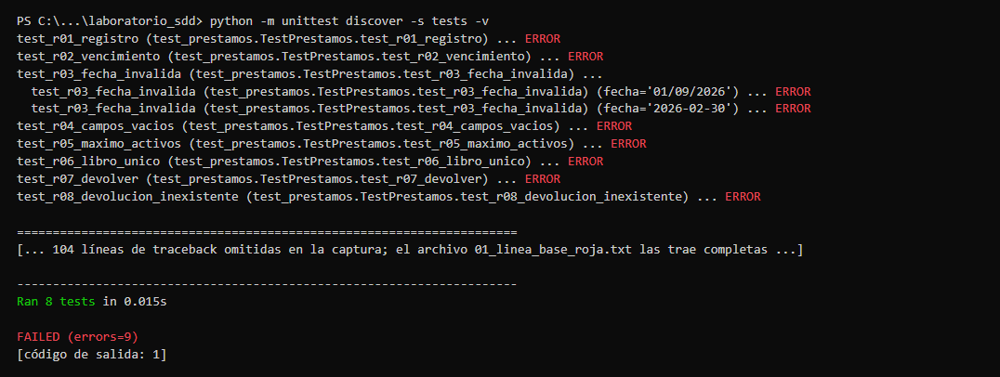
Figura 2. Línea base roja: las ocho pruebas fallan por NotImplementedError.
4.2 T01: registrar, validar y calcular fecha (pasos 19 y 20)
Implementa ÚNICAMENTE T01. Lee constitution.md, spec.md,
plan.md y tasks.md. Cambia solo prestamos.py; conserva las
firmas, cumple AC01–AC04 y explica tu diff. No añadas UI,
BD, dependencias ni código para T02/T03 todavía.
La IA agregó dos ayudantes privados (_texto_limpio y _fecha_valida) y la lógica de registrar_prestamo. Al revisar el diff (Figura 3) comprobamos que valida el texto y la fecha antes del append, que no hay nada de R05, R06 ni de devolver_prestamo y que los únicos imports son date y timedelta. Dijo que no pudo ejecutar las pruebas porque el comando pedía aprobación, y no insistió por otro lado.
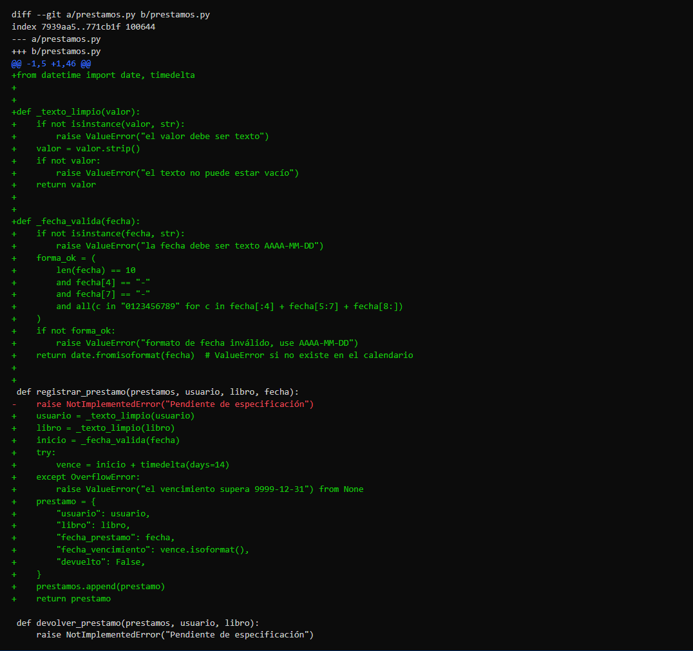
Figura 3. Diff de T01 sobre prestamos.py.
La IA anticipó que r05 y r06 fallarían «con NotImplementedError», pero en la corrida real (Figura 4) fallan con AssertionError, porque registrar_prestamo acepta el cuarto préstamo y el segundo del mismo libro. Pasan r01 a r04, y que r05 a r08 fallen es lo esperado en este punto.
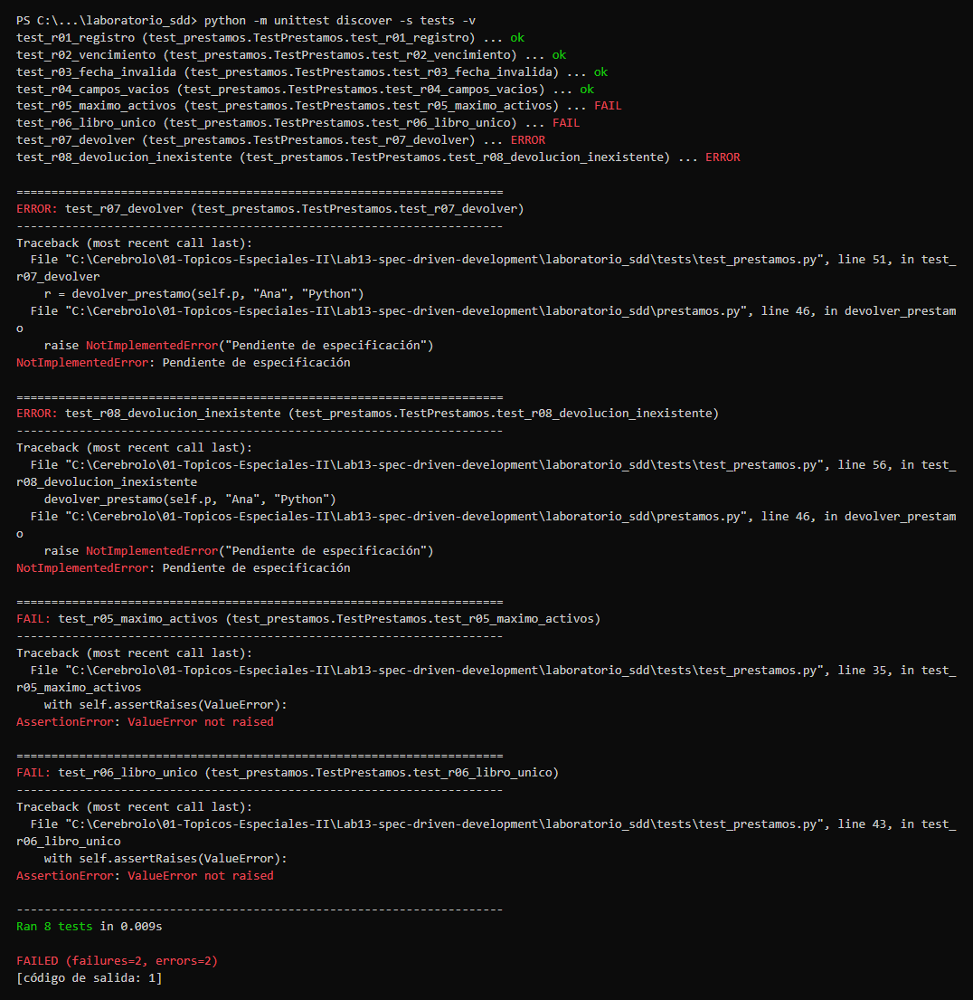
Figura 4. Pruebas después de T01: pasan r01 a r04; r05 a r08 siguen fallando.
4.3 T02 y T03, una iteración por tarea (pasos 21 y 22)
Ahora implementa SOLO T02: R05–R06. Revisa el límite de
3 préstamos activos y el libro activo global. No cambies
interfaces, pruebas ni otros requisitos; informa los cambios.
El diff de T02 (Figura 5) agrega dos ayudantes con guion bajo y dos comprobaciones justo antes del append, en el orden que fija la spec (libro activo primero, límite del usuario después). No tocó las firmas ni las pruebas. Nos advirtió algo cierto: r05 y r06 llaman a devolver_prestamo en su parte final, así que no pueden pasar hasta T03. La Figura 6 lo confirma, con cuatro errores, r05 a r08.
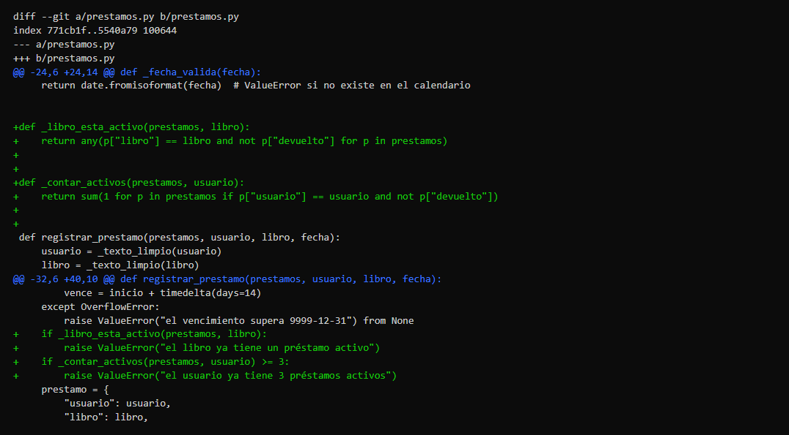
Figura 5. Diff de T02 sobre prestamos.py.
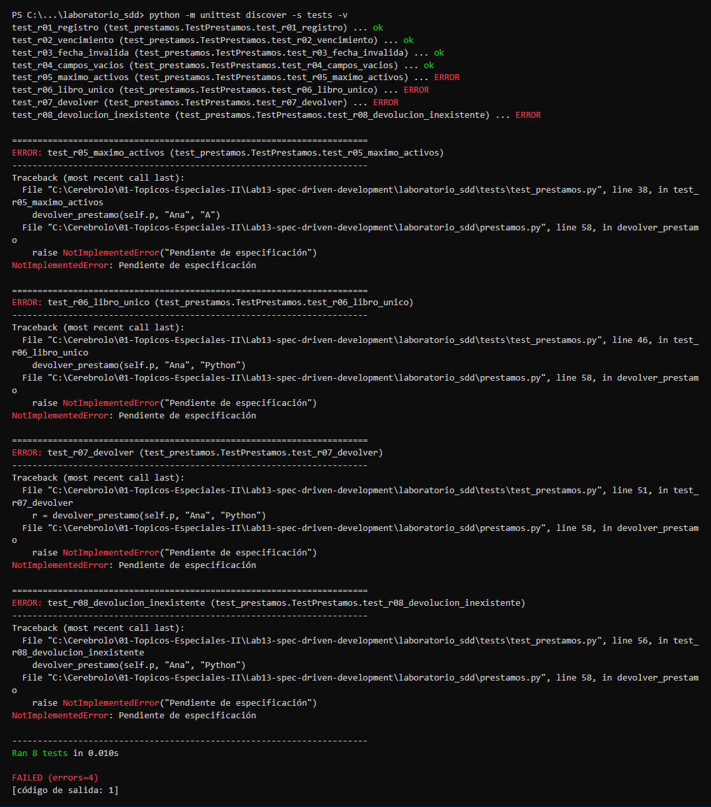
Figura 6. Pruebas después de T02.
Para T03 abrimos una interacción nueva con el prompt del enunciado:
Implementa SOLO T03, R07–R08; valida antes de modificar los datos.
La IA reutilizó _texto_limpio para recortar los argumentos, buscó el préstamo activo del par usuario-libro y, si no existe, lanzó ValueError; el único cambio de datos (devuelto = True) va después de encontrarlo (Figura 7). En su explicación nos sugirió correr las pruebas con un flag adicional (-t .) que no hace falta; mantuvimos el comando del enunciado. Las ocho pruebas pasaron (Figura 8).
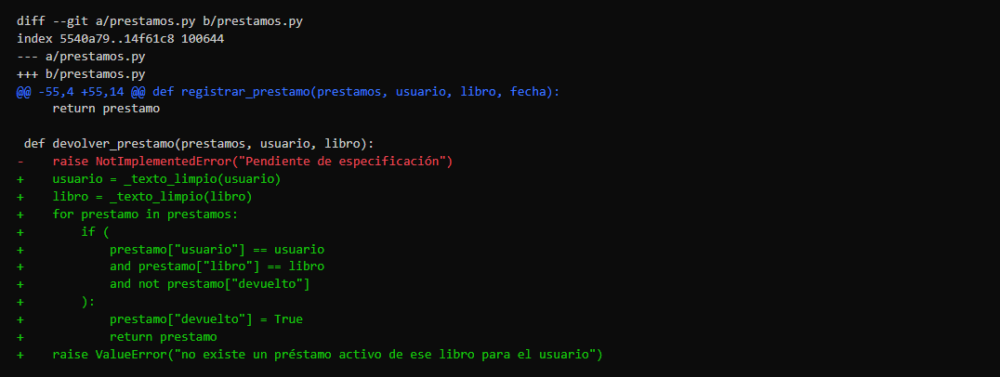
Figura 7. Diff de T03 sobre prestamos.py.Figura 8. Versión 1.0: las ocho pruebas en verde.
El paso 22 pide corregir «por referencia» si aparece un fallo. En nuestra corrida no apareció ninguno después de T03, así que no tuvimos que mandar el mensaje «Falla ACxx / test_rxx; corrige solo esa discrepancia», y no vamos a inventarlo. El prompt limitado a un requisito que sí tiene evidencia completa es el cambio de R05 de la Fase D.
En ninguna de las tres tareas la IA se salió del alcance: no tocó pruebas, no hizo código de otra tarea y no agregó dependencias. Los rechazos de este laboratorio estuvieron en los documentos (Tabla 1 y secciones 3.2 y 3.3), no en el código.
4.4 Revisión manual y cotejo con la spec (pasos 23 y 24)
Escribimos un script corto que, para cada caso negativo, imprime la lista antes, el error y la lista después, y la compara con una copia profunda. Corrimos los tres casos pedidos (fecha 2026-02-30, libro Python ya prestado a Ana y cuarto préstamo activo de Ana) y también las decisiones de la spec que ninguna de las ocho pruebas toca: formato sin ceros, dígitos de ancho completo, desborde de 9999-12-31, usuario None, devolver el libro de otro usuario, recorte al devolver y comparación sensible a mayúsculas. Dieron 18 de 18 verificaciones correctas; la Figura 9 muestra el inicio de la salida.
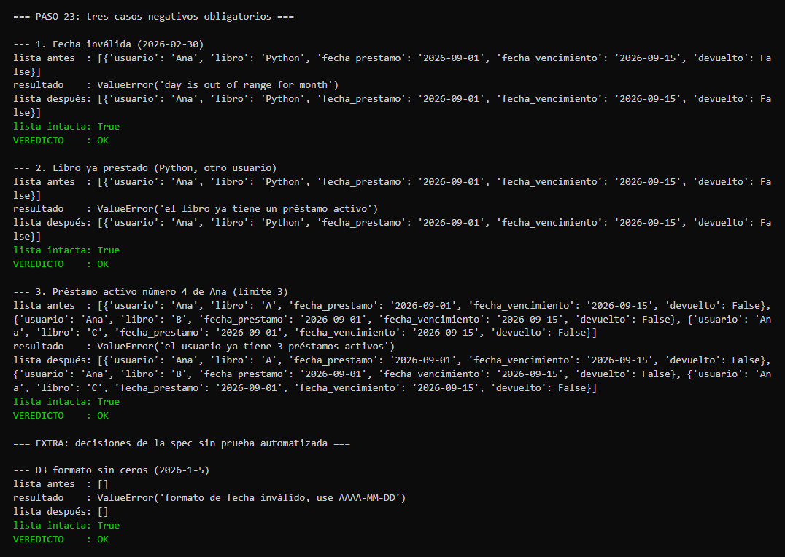
Figura 9. Revisión manual de casos negativos con la lista antes y después (versión 1.0).
Después cotejamos R01 a R08 contra el código uno por uno, con número de línea, en traceability.md. El módulo tiene dos funciones públicas y cuatro ayudantes con guion bajo; no hay UI, base de datos ni uso del reloj del sistema. No hicimos commit porque no usamos Git. Queda un riesgo que dejamos dicho: esas decisiones extra solo las verifica el script manual, de modo que si alguien rompe una, ninguna de las ocho pruebas avisa.
5. Fase D. Cambio de requisitos y convergencia
5.1 Spec v1.1 y prueba primero (pasos 25 a 27)
El cliente pidió bajar a dos los préstamos activos por usuario. Antes de tocar nada actualizamos docs/spec.md a la versión 1.1: R05 con máximo 2, AC05 con «el tercer préstamo activo produce ValueError» y un historial de cambios con el motivo (restricción de espacio), la fecha (29/10/2026) y el responsable (Gerald Ríos). Dejamos intactas las demás reglas y guardamos copias de ambas versiones para poder compararlas.
Luego cambiamos solo test_r05_maximo_activos: libros iniciales A y B, intento fallido con C, longitud esperada 2, devolver A y registrar C (la Figura 10 muestra el diff de la prueba y la 11 la corrida). El código seguía en 3 y falló solo r05, con «ValueError not raised». Esa era la falla que queríamos ver.
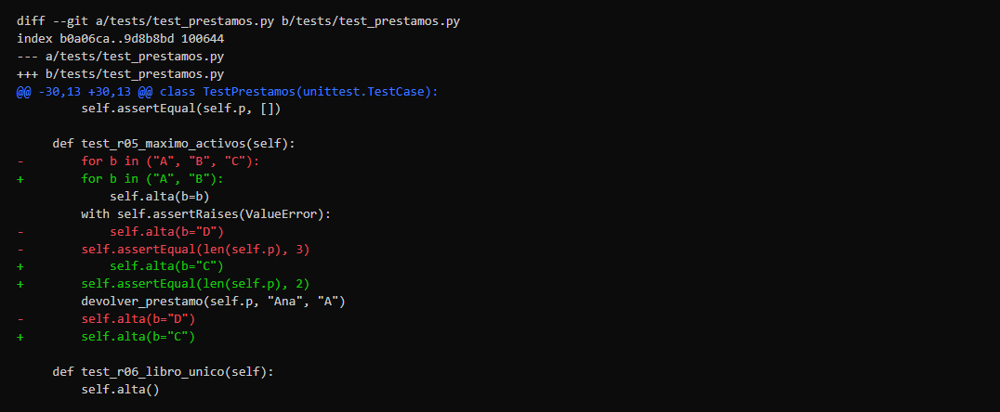
Figura 10. Cambio en test_r05_maximo_activos.
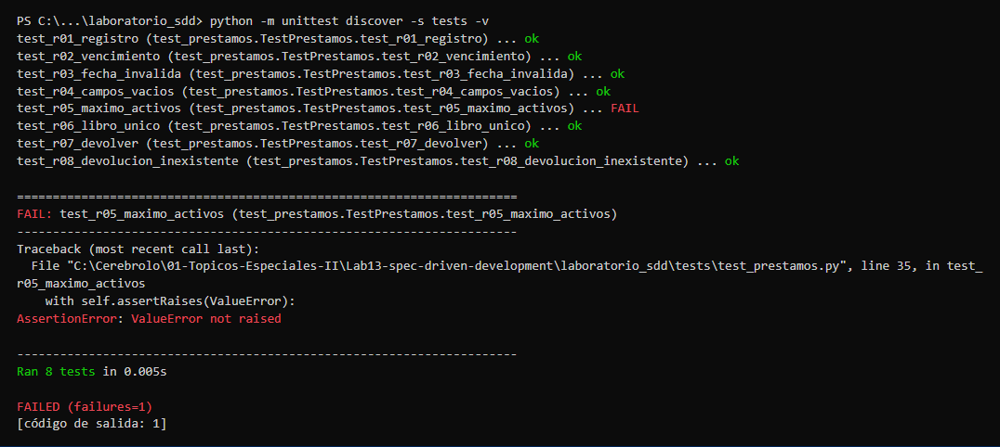
Figura 11. Después de actualizar la prueba y antes de tocar el código: falla solo r05.
5.2 Cambio limitado a R05 y verificación final (pasos 28 y 29)
Agregamos T06 a tasks.md con el alcance del cambio y le pasamos a la IA el prompt del enunciado:
Cambio aprobado: spec v1.1, R05/AC05 reduce el límite de
3 a 2. La prueba actualizada falla. Modifica exclusivamente
la regla de límite en prestamos.py. No cambies otras funciones
ni tests. Ejecutaré las pruebas independientemente.
El diff (Figura 12) tiene una línea de lógica (>= 3 a >= 2) y el texto del mensaje de error, que la IA cambió de «3» a «2». Eso último no se pidió de forma expresa; lo aceptamos porque el mensaje habría quedado diciendo algo falso y está dentro de la misma regla. Si hubiera tocado otra función o la prueba, lo habríamos restaurado desde el snapshot. Las pruebas las corrimos nosotros: ocho en verde (Figura 13). Son las mismas ocho de antes salvo r05, y la revisión manual repetida con límite 2 dio otra vez 18 de 18, de modo que no hay regresión en R01 a R04 ni en R06 a R08.
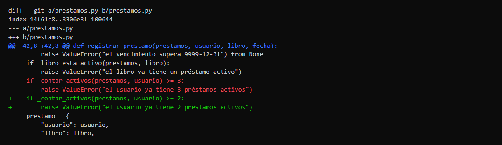
Figura 12. Diff del cambio limitado a R05.
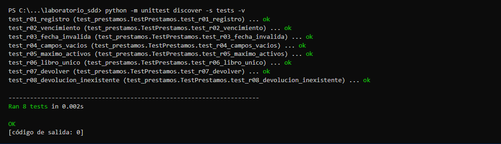
Figura 13. Versión 1.1: las ocho pruebas en verde.
En traceability.md registramos R05 v1.1 con su prueba, el cambio aplicado y el resultado. La Tabla 2 junta todas las corridas.
Tabla 2. Corridas de pruebas del laboratorio
Momento
Resultado
Archivo de evidencia
Línea base (solo firmas)
FAILED (errors=9)
01_linea_base_roja.txt
Después de T01
FAILED (failures=2, errors=2); pasan r01 a r04
02_despues_T01.txt
Después de T02
FAILED (errors=4); r05 a r08 esperan T03
03_despues_T02.txt
Después de T03 (v1.0)
OK, 8 pruebas
04_v1.0_verde.txt
v1.1, prueba cambiada, código sin cambiar
FAILED (failures=1): r05
06_r05_v11_rojo.txt
v1.1 final
OK, 8 pruebas
07_v1.1_verde.txt
6. Diferencia con una práctica de vibe coding
Si le hubiéramos pedido a la IA «crea un gestor de préstamos» y después «ajusta el límite», sin documentos, pruebas ni revisión, la IA habría tenido que adivinar lo que en este laboratorio costó 38 preguntas y un par de rondas de auditoría: cuántos días dura el préstamo, cuántos libros admite cada usuario, si 2026-1-5 es una fecha válida, qué pasa al devolver algo que no existe. Cada respuesta inventada quedaría escondida en el código, probablemente con date.today() para el vencimiento, que es justo lo que la constitución prohíbe. Y el segundo mensaje sería peor: «el límite» podía ser el plazo o la cantidad de libros, y sin una R05 numerada ni una prueba que falle, nadie habría sabido si la IA tocó la regla correcta, si rompió otra o si dejó el mensaje de error diciendo «3». Nos pasó algo parecido en pequeño: al bajar el límite la IA también cambió el texto del error, y solo lo notamos porque estábamos leyendo un diff de 15 líneas y no un archivo nuevo. El beneficio del trabajo dirigido por especificaciones fue ese: el cambio de tres a dos préstamos se redujo a una línea de lógica, una prueba que falló antes y pasó después y una fila en la matriz de trazabilidad. El costo fue tiempo: antes de la primera línea de código escribimos y revisamos constitución, spec, plan y tareas, y rechazamos propuestas largas de la IA (como diez clases de prueba) para no perder el alcance. Además, la documentación no garantiza cobertura, como se ve en la pregunta 5 de la reflexión.
7. Entregables y demostración
7.1 Matriz de trazabilidad
La Tabla 3 es la matriz completa que también está en docs/traceability.md. Cada fila va del requisito al criterio de aceptación, a la tarea, a la prueba y a la evidencia.
Tabla 3. Matriz R → AC → tarea → prueba → evidencia
Req.
AC
Tarea
Prueba
Evidencia
R01
AC01
T01
test_r01_registro
Rojo en 01; verde en 04 y 07; diff de T01
R02
AC02
T01
test_r02_vencimiento
Igual que R01
R03
AC03
T01
test_r03_fecha_invalida
Igual que R01; revisión manual 05, caso 1 y D3
R04
AC04
T01
test_r04_campos_vacios
Igual que R01; revisión manual 05, D4
R05 v1.0 (límite 3)
AC05
T02
test_r05_maximo_activos (con 3)
03 y 04; diff de T02; revisión manual 05, caso 3
R05 v1.1 (límite 2)
AC05 v1.1
T06
test_r05_maximo_activos (con 2)
06 en rojo, 07 en verde; diffs del cambio y de la prueba; revisión manual 08
R06
AC06
T02
test_r06_libro_unico
03, 04 y 07; revisión manual 05, caso 2
R07
AC07
T03
test_r07_devolver
04 y 07; diff de T03
R08
AC08
T03
test_r08_devolucion_inexistente
04 y 07; revisión manual 05, D11
Cierre (ValueError y lista intacta)
AC03 a AC06, AC08
T01 a T03
Los assertEqual sobre la lista en r03, r04, r05, r06 y r08
Revisión manual: lista antes y después
Los números de evidencia (01 a 08) corresponden a los archivos de la carpeta evidencia listados en la Tabla 2 y a las dos revisiones manuales (05 para la versión 1.0 y 08 para la 1.1).
7.2 Qué incluye la entrega
La carpeta laboratorio_sdd con docs/ (constitución, spec con la v1.0 y el cambio v1.1 documentado, plan, tareas y trazabilidad), prestamos.py y tests/test_prestamos.py.
Evidencia de pruebas antes de implementar, después de v1.0 y después de v1.1, más los diffs de cada cambio de la IA y las copias de cada etapa.
Las transcripciones completas de cada prompt en prompts/, incluidos los de T01 a T03 y el del cambio de R05.
7.3 Demostración breve
Para la demostración mostraríamos, en este orden: la spec en sus dos versiones, plan y tareas, la corrida roja inicial, la corrida verde de v1.0, el cambio de R05 con la prueba en rojo y después en verde, y la matriz de la Tabla 3. Funcionalmente, registrar_prestamo(lista, "Ana", "Python", "2026-09-01") devuelve un préstamo con vencimiento 2026-09-15, y un tercer préstamo activo de Ana lanza ValueError sin cambiar la lista.
7.4 Ruta opcional con Spec Kit
No hicimos los pasos 32 a 34 porque el enunciado los marca como opcionales y dice que no son necesarios para aprobar. No instalamos Spec Kit ni generamos ningún artefacto con él. Lo que decimos de la herramienta en la pregunta 6 sale de su repositorio oficial (GitHub, s. f.), no de haberla usado.
8. Preguntas de reflexión
8.1 ¿Qué diferencia hay entre una solicitud informal y una especificación comprobable?
La solicitud informal dice «un gestor de préstamos de libros»; deja abiertas decenas de decisiones y cada quien las llena a su manera. La especificación las cierra con números y casos: 14 días, máximo de 3 (luego 2) y «2026-1-5 no es válida». Lo comprobable es que se puede escribir una prueba que pase o falle sin preguntarle a nadie qué quiso decir la regla. La IA nos lo demostró con las 38 preguntas del paso 4, que eran decisiones que alguien tenía que tomar.
8.2 ¿Por qué la especificación define qué se necesita y el plan cómo se hará?
Porque cambian por razones distintas. El cliente puede bajar el límite a dos préstamos sin que cambie nada de cómo se valida una fecha, y nosotros podríamos cambiar date.fromisoformat por una validación manual sin que el cliente note nada. En este laboratorio el plan decidió cosas de implementación (formato estricto antes de fromisoformat, un solo append al final) que no aparecen en R01 a R08. Además el plan es donde la IA propuso de más, y pudimos rechazarlo sin tocar los requisitos.
8.3 ¿En qué momento debe decidir el humano si la IA puede implementar?
Después de que la spec esté aprobada, los dos puntos de control estén cerrados y la línea base roja exista. Hasta ese momento autorizamos solo documentos; para implementar le dimos permiso por tarea, con un prompt que nombraba una sola (T01, luego T02, luego T03) y una lista de herramientas que le permitía leer y editar, pero no ejecutar. La decisión se vuelve a tomar en cada tarea y en el cambio de R05, porque cada diff se acepta o se rechaza al revisarlo.
8.4 ¿Por qué un cambio exige actualizar requisitos y pruebas antes del código?
Porque son lo que nos dice si el código está bien. Si cambiábamos primero prestamos.py a «>= 2», habríamos tenido ocho pruebas en verde con una spec que todavía decía 3, o peor, una prueba que pasaba sin haberla visto fallar. Al cambiar primero spec y prueba vimos fallar a r05 con «ValueError not raised» (Figura 11), que es la prueba de que la prueba mide lo que debe. Después el cambio en el código fue una línea y la verificación fue instantánea.
8.5 ¿Puede haber ocho pruebas verdes y aun así existir un requisito no cubierto?
Sí, y en este laboratorio ocurrió. Las ocho pruebas pasan, pero decisiones como el desborde de 9999-12-31 (D4), el formato sin ceros (D3), el recorte al devolver (D5), la distinción entre mayúsculas (D6) o devolver el libro de otro usuario (D11) no tienen ninguna prueba automatizada; test_r03 solo prueba dos fechas inválidas. Si alguien cambia el código y rompe una de ellas, el reporte seguiría diciendo «OK». Por eso hicimos la revisión manual de 18 verificaciones y dejamos anotado en la trazabilidad que esas decisiones dependen de ese script. Verde significa que se cumple lo que las pruebas miden, y la cobertura de los requisitos hay que revisarla aparte.
8.6 ¿Qué aporta Spec Kit y qué no reemplaza de la ingeniería de software?
Según su repositorio oficial (GitHub, s. f.), Spec Kit es un conjunto de procesos, plantillas y documentación de resultados para agentes de programación; para desarrollo guiado por especificaciones ofrece comandos que se escriben en el chat del agente (constitución, especificación, plan, tareas, implementación y convergencia). Lo que aporta es estructura repetible: los artefactos que nosotros creamos a mano y la secuencia entre ellos. Lo que no reemplaza es el criterio. La propia página indica que los comandos se ejecutan uno a la vez y que se revisa cada resultado antes de continuar, y avisa que los listados de la comunidad no son auditorías. Seguiría siendo trabajo nuestro decidir qué reglas de negocio valen, aprobar la spec, decidir cuándo la IA puede implementar, revisar cada diff y comprobar que la cobertura de las pruebas sea suficiente. Esta respuesta se basa en lo que dice la documentación; no ejecutamos la herramienta.
Conclusiones
Cerramos las cuatro fases con el gestor funcionando: ocho pruebas en verde en la versión 1.0 y otra vez en la 1.1, con la evidencia de cada corrida, los diffs de lo que escribió la IA y una matriz que enlaza cada requisito con su prueba. La parte que más costó no fue el código, que son unas 70 líneas, sino cerrar la especificación: la auditoría de la IA encontró problemas reales (el desborde de fecha, el formato permisivo de fromisoformat) y el plan trajo propuestas que hubo que descartar una por una.
Lo que quedó a medias: las decisiones D3 a D11 se comprobaron con un script manual y no con pruebas, porque el enunciado fija las ocho pruebas y no queríamos ampliarlas por nuestra cuenta; es un riesgo que dejamos anotado. La IA no se salió de alcance en ninguna tarea de código, así que el registro de rechazos está en los documentos y no en los diffs, y tampoco tuvimos un fallo que corregir en el paso 22. No hicimos la ruta opcional de Spec Kit ni usamos Git. Hay que subir el PDF y el ZIP por Assignments, y el commit de la carpeta lo hace quien entrega.
Referencias Bibliográficas
GitHub. (s. f.). Spec Kit [Repositorio de código]. GitHub. Recuperado el 29 de octubre de 2026 de https://github.com/github/spec-kit